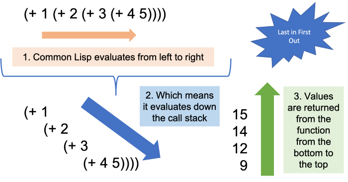
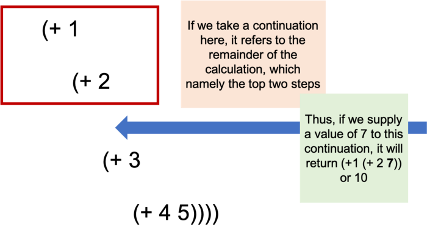

Продолжение - сложная концепция, но она имеет определенную ценность в определенных приложениях. В этом руководстве я попытаюсь объяснить концепции и то, как реализовать продолжения в Common Lisp, надеюсь, это поможет в вашем понимании этой темы. Я подозреваю, что вам придется прочитать несколько разных объяснений из разных источников, и, надеюсь, одно из них понравится. Надеюсь, вы найдете приведенное ниже руководство полезным.
В Части 1 (эта страница) дается концептуальный обзор продолжений, а в Части 2 (которая выйдет в ближайшее время) подробно описывается возможная реализация в Common Lisp (на основе макросов передачи продолжения Пола Грэма из On Lisp).
Продолжением можно считать программу, замороженную в действии. Вы можете хранить этот объект столько, сколько захотите, и когда вы его вызовете, он перезапустит вычисления, происходившие при его создании.
Мне нравится думать о продолжении как о книжной закладке(bookmark) в программе. Рассмотрим следующее выражение:
> (+ 1 (+ 2 (+ 3 (+ 4 5))))
;; Which may be easier to read as follows:> (+ 1
(+ 2
(+ 3
(+ 4 5))))
Мы могли бы переписать эту программу как:
Добавьте 3 к результату шага 1 (9), чтобы получить 12
Скажем, мы взяли продолжение после шага 2 и
сохранили его в объекте с именем *cont*.
Это продолжение будет представлять собой оставшуюся часть вышеуказанной программы,
а именно шаги 3 и 4.
Давайте немного поработаем с псевдокодом. Предположим, мы можем вызвать это продолжение и передать значение, скажем 7, следующим образом:
> (*cont* 7)
Продолжение *cont* является
функциональным объектом, и здесь будет перезапущена оставшаяся часть программы
(шаги 3 и 4 выше), но с использованием предоставленного значения (7), а не исходного
значения в конце шага 2 (12). Таким образом, приведенное выше выражение вернет 10:
> (*cont* 7)10;; Вышеупомянутое эквивалентно (+ 1 (+ 2 7)), где 7 - это значение, передаваемое в продолжение.
Давайте вернемся к вышесказанному, но с другой точки зрения. Когда наш интерпретатор Common Lisp оценивает(вычисляет) предыдущее выражение, он вычисляет каждый член слева направо. Это имеет эффект опускания стека вызовов (теоретически - я не уверен, действительно ли стеки вызовов создаются для простого примера ниже, но вы можете представить себе тот же процесс для функций, вызывающих другие функции, и так далее).

Как только вычислитель достигает дна стека, он начинает возвращать значения наверх. Вышеупомянутые четыре шага отражают этот процесс возврата. Таким образом, Lisp будет вычислять формы слева направо и вниз, а затем, когда все формы вычслены, он вернет значения навверх.
Чтобы помочь понять продолжения, эта вызуализация помогает, увидеть как Lisp вычисляет формы вниз и возвраты результатов форм наверх.
Дайте нам знать, визуализируйте наше продолжение сверху с помощью нижеследующего. Если вы внимательно пройдетесь по нашему примеру, вы, надеюсь, увидите, что продолжение относится на самом деле к верхней части выражения, а не к нижней части. Таким образом, хотя продолжение относится к оставшейся части программы, как только мы понимаем, что возвращаемые значения возвращаются вверх, мы понимаем, что оставшаяся часть программы - это все формы выше точки, в которой мы берем продолжение, а не ниже ее. Для меня это был очень важный момент, так что, надеюсь, вы тоже его оцените.

Итак, снова, для повторения, вычисляете вниз, но возвращайтесь вверх. Последними частями программы являются те, что находятся наверху, т. е. Последнее пришло - первое вышло, или, альтернативно, первое пришло последним :)
Тогда возникает естественный вопрос: что является нижней частью приведенной выше программы, а именно:
> (+ 3 (+ 4 5))
Это просто нормальный вызов функции. Нам не нужны какие-либо специальные механизмы для его «сохранения» или повторного запуска - это просто простая форма, которую нам нужно запустить. Можно очень легко сохранить эти вызовы функций в переменной и вызывать их позже, примерно так:
> (defvar *saved-form*)> (let ((next-steps (lambda (a)
(+ 3 (+ 4 a)))))
(setf *saved-form* next-steps)
(funcall next-steps 5))12> *saved-form*#<FUNCTION (LAMBDA (A)) {52C670EB}>> (funcall *saved-form* 5)12Короче говоря, очень легко узнать, что происходит
дальше, то есть формы, которые мы собираемся вычислить (например, в
let выше).
Намного сложнее узнать, что произошло раньше, потому что для
этого потребуется вернуться вверх по стеку вызовов до самого верхнего уровня, что-то,
что можно сделать, но что-то, что не всегда очевидно из блока кода, который вы сейчас
просматриваете.
Например, как бы мы могли изобразить вышеупомянутое продолжение? Возможно, мы могли бы сделать
> (defun *cont* (a)
(+ 1 (+ 2 a)))
Это не так уж плохо. Но представьте, если бы у нас было много уровней в нашем стеке вызовов, в том числе с рекурсиями. Насколько я понимаю, это непростая задача.
Концептуально в функциональном программировании мы пишем сверху вниз (согласно схемам выше). Так что относительно легко следить за тем, что будет дальше, но мы склонны терять из виду то, что происходило раньше.
Я предполагаю, что центральная концепция во всем этом - разница между императивным и декларативным программированием. Любезно предоставлено Stack Overflow:
Императивный язык использует последовательность утверждений(sequence of statements), чтобы определить, как достичь определенной цели. Считается, что эти операторы изменяют состояние программы, поскольку каждый из них выполняется по очереди.
С другой стороны, функциональное программирование - это форма декларативного программирования. Декларативное программирование - это не императивный стиль программирования, при котором программы описывают желаемые результаты без явного перечисления команд или шагов, которые должны быть выполнены.
В нашем примере императивное программирование - это четыре шага, которые мы обозначили в начале, пошаговые команды о том, как выполнить программу от начала до конца. В таких стилях программирования относительно легко отслеживать следующие шаги, в конце концов, это пошаговый процесс.
С другой стороны, функциональный пример, который мы вам дали, был декларативным. На первом этапе мы сказали, дайте нам сумму 1 и (+ 2…). Последний объект еще не был рассчитан, мы просто сказали, что хотим. Только на последующих этапах мы работали в направлении вниз и вычисляли каждую часть этой формы и вычисляли значение, которое нужно добавить к 1.
Можно подумать, что возврат значений наверх является императивным вычислением, выполняемым интерпретатором для вычисления окончательного результата после вычисления каждой части, то есть:
Форма - это выражение того, что мы хотим
Вычисление(оценка) элементов формы → Определение того, чего мы хотим
В функциональном программировании легко спросить, чего мы хотим (т. е. Форма - это выражение того, что мы хотим), но сложнее выразить шаги, чтобы получить это. По этой причине продолжения, которые представляют собой остаток шагов программы в определенной точке программы, сложнее выразить вручную в функциональном программировании, поскольку стиль функциональной парадигмы затемняет эту часть («как») в пользу «что».
Возвращаясь к нашему предыдущему обсуждению,
относительно легко попросить нижнюю часть (+ 3
(+ 4 5)), поскольку это просто запрос того, что мы хотим;
немного сложнее запросить верхнюю часть, потому что это остаток шагов
в вычислении, а наш языковой стиль явно скрывает шаги вычисления («как»)
от шагов вычисления(оценки) (спрашивая «что» мы хотим ).
Таким образом, продолжения являются важным механизмом для преодоления этого пробела, чтобы упростить выполнение оставшихся шагов программы. Я не эксперт, но, основываясь на вышеизложенном, я бы предположил, что продолжения имеют гораздо меньшее значение в императивных языках, потому что оставшиеся шаги программы очень очевидны на этих языках.
И в качестве заключительной мысли к Части 1 этого руководства, я надеюсь, что приведенное выше уточнение подчеркивает важность понимания и использования продолжений в функциональном программировании, поскольку они представляют собой ключевой аспект ограничений самого языка (ограничения может быть не лучшим словом, но этот недостаток - просто результат функционального программирования, сосредоточенного на том, что мы хотим, а не на том, как этого достичь).
Давайте теперь продолжим и узнаем, как реализовать продолжения в Common Lisp. Ниже приведены необходимые нам макросы. Ой! Мы рассмотрим их во второй части руководства, которая вскоре выйдет.
(defvar *actual-cont* #'identity)(define-symbol-macro *cont* *actual-cont*)(defmacro =defun (name parameters &body body)
(let ((f (intern (concatenate 'string
"="
(symbol-name name)))))
`(progn
(defmacro ,name ,parameters
`(,',f *cont* ,,@parameters))
(defun ,f (*cont* ,@parameters)
,@body))))(defmacro =bind (parameters expression &body body)
`(let ((*cont* #'(lambda ,parameters ,@body)))
,expression))(defmacro =values (&rest return-values)
`(funcall *cont* ,@return-values))(defmacro =funcall (fn &rest arguments)
`(funcall ,fn *cont* ,@arguments))(defmacro =apply (fn &rest arguments)
`(apply ,fn *cont* ,@arguments))(defmacro =lambda (parameters &body body)
`#'(lambda (*cont* ,@parameters)
,@body))